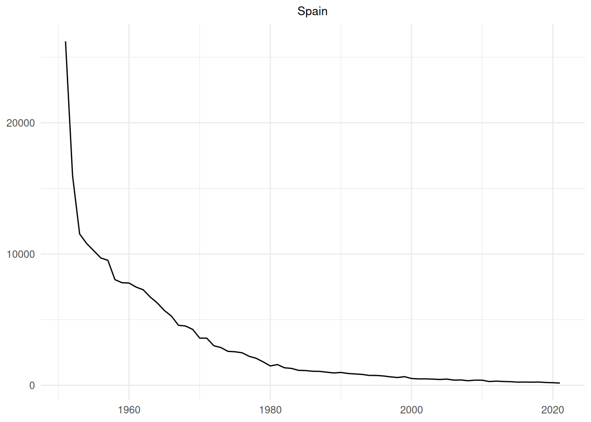

Rows: 14,692
Columns: 12
$ Region.Code <chr> "EU", "EU"…
$ Region.Name <chr> "Europe", …
$ Country.Code <chr> "ALB", "AL…
$ Country.Name <chr> "Albania",…
$ Year <dbl> 1987, 1997…
$ Sex <chr> "All", "Al…
$ Age.group.code <chr> "Age_all",…
$ Age.Group <chr> "[All]", "…
$ Number <dbl> 47, 19, 10…
$ Percentage.of.cause.specific.deaths.out.of.total.deaths <dbl> 0.27126861…
$ Age.standardized.death.rate.per.100.000.standard.population <dbl> 2.2548644,…
$ Death.rate.per.100.000.population <dbl> 1.5279087,…TFG
Installing data and packages
First, we will install and load the necessary packages for this study. Additionally, we will load the required datasets. The analysis is based on three datasets:
Mortality: Downloaded from the World Health Organization, this is the primary dataset for the analysis. It contains the number of tuberculosis-related deaths in all countries. However, our study will focus solely on European countries.
Population: From this dataset, we will extract only the population variable. The source of this data is Our World in Data.
GDP per capita: Similar to the population dataset, we will extract only the gdp_per_capita variable. The source of this data is Data Bank.
Let’s examine the structure of the datasets:
- Mortality:
- Population
Rows: 18,944
Columns: 3
$ Entity <chr> "Afghanistan", "…
$ Year <int> 1950, 1951, 1952…
$ Population...Sex..all...Age..all...Variant..estimates <dbl> 7776182, 7879343…- gdp_per_capita
Rows: 2,629
Columns: 7
$ Series.Name <chr> "GDP per capita (current US$)", "GDP per capita (current …
$ Series.Code <chr> "NY.GDP.PCAP.CD", "NY.GDP.PCAP.CD", "NY.GDP.PCAP.CD", "NY…
$ Country.Name <chr> "Albania", "Albania", "Albania", "Albania", "Albania", "A…
$ Country.Code <chr> "ALB", "ALB", "ALB", "ALB", "ALB", "ALB", "ALB", "ALB", "…
$ Time <int> 1960, 1961, 1962, 1963, 1964, 1965, 1966, 1967, 1968, 196…
$ Time.Code <chr> "YR1960", "YR1961", "YR1962", "YR1963", "YR1964", "YR1965…
$ Value <dbl> NA, NA, NA, NA, NA, NA, NA, NA, NA, NA, NA, NA, NA, NA, N…Cleaning data
As seen, we need to standardize the variables names to merge the tables.
[1] "Mortality"Rows: 14,692
Columns: 12
$ Region_Code <chr> "EU", "EU", "EU", "EU", "EU", "EU", "EU", "EU", "EU",…
$ Region_Name <chr> "Europe", "Europe", "Europe", "Europe", "Europe", "Eu…
$ Country_Code <chr> "ALB", "ALB", "ALB", "ALB", "ALB", "ALB", "ALB", "ALB…
$ Country_Name <chr> "Albania", "Albania", "Albania", "Albania", "Albania"…
$ Year <dbl> 1987, 1997, 1996, 1996, 1995, 1994, 1994, 1994, 1993,…
$ Sex <chr> "All", "All", "Female", "All", "Male", "Female", "Mal…
$ Age.group.code <chr> "Age_all", "Age_all", "Age_all", "Age_all", "Age_all"…
$ Age.Group <chr> "[All]", "[All]", "[All]", "[All]", "[All]", "[All]",…
$ Number_Deaths <dbl> 47, 19, 10, 34, 10, 13, 26, 39, 12, 22, 15, 22, 19, 4…
$ Percent_CS_Death <dbl> 0.27126861, 0.11741441, 0.14432097, 0.20302144, 0.107…
$ Age_Death_Rate <dbl> 2.2548644, 0.8057827, 0.7155687, 1.1585865, 0.7375924…
$ Death_Rate <dbl> 1.5279087, 0.5715489, 0.6027727, 1.0356381, 0.6219679…[1] "Population"Rows: 18,944
Columns: 3
$ Country_Name <chr> "Afghanistan", "Afghanistan", "Afghanistan", "Afghanistan…
$ Year <int> 1950, 1951, 1952, 1953, 1954, 1955, 1956, 1957, 1958, 195…
$ Population <dbl> 7776182, 7879343, 7987783, 8096703, 8207953, 8326981, 845…[1] "gdp_per_capita"Rows: 2,629
Columns: 4
$ Country_Name <chr> "Albania", "Albania", "Albania", "Albania", "Albania", "A…
$ Country_Code <chr> "ALB", "ALB", "ALB", "ALB", "ALB", "ALB", "ALB", "ALB", "…
$ Year <int> 1960, 1961, 1962, 1963, 1964, 1965, 1966, 1967, 1968, 196…
$ GDP_capita <dbl> NA, NA, NA, NA, NA, NA, NA, NA, NA, NA, NA, NA, NA, NA, N…The next step is to select the variables of study of the mortality dataset. We will exclude Sex, Age.group.code and Age.group.
Rows: 4,869
Columns: 9
$ Region_Code <chr> "EU", "EU", "EU", "EU", "EU", "EU", "EU", "EU", "EU",…
$ Region_Name <chr> "Europe", "Europe", "Europe", "Europe", "Europe", "Eu…
$ Country_Code <chr> "ALB", "ALB", "ALB", "ALB", "ALB", "ALB", "ALB", "ALB…
$ Country_Name <chr> "Albania", "Albania", "Albania", "Albania", "Albania"…
$ Year <dbl> 1987, 1997, 1996, 1994, 1992, 1989, 1988, 1995, 1993,…
$ Number_Deaths <dbl> 47, 19, 34, 39, 22, 41, 39, 17, 34, 21, 16, 8, 7, 9, …
$ Percent_CS_Death <dbl> 0.27126861, 0.11741441, 0.20302144, 0.26027763, 0.127…
$ Age_Death_Rate <dbl> 2.2548644, 0.8057827, 1.1585865, 1.5472763, 0.9103631…
$ Death_Rate <dbl> 1.5279087, 0.5715489, 1.0356381, 1.2179888, 0.6896336…Now, we can join the other two datasets:
Rows: 1,998
Columns: 11
$ Region_Code <chr> "EU", "EU", "EU", "EU", "EU", "EU", "EU", "EU", "EU",…
$ Region_Name <chr> "Europe", "Europe", "Europe", "Europe", "Europe", "Eu…
$ Country_Code <chr> "ALB", "ALB", "ALB", "ALB", "ALB", "ALB", "ALB", "ALB…
$ Country_Name <chr> "Albania", "Albania", "Albania", "Albania", "Albania"…
$ Year <dbl> 1987, 1997, 1996, 1994, 1992, 1989, 1988, 1995, 1993,…
$ Number_Deaths <dbl> 47, 19, 34, 39, 22, 41, 39, 17, 34, 21, 16, 8, 7, 9, …
$ Percent_CS_Death <dbl> 0.27126861, 0.11741441, 0.20302144, 0.26027763, 0.127…
$ Age_Death_Rate <dbl> 2.2548644, 0.8057827, 1.1585865, 1.5472763, 0.9103631…
$ Death_Rate <dbl> 1.5279087, 0.5715489, 1.0356381, 1.2179888, 0.6896336…
$ Population <dbl> 3148843, 3229665, 3245681, 3269417, 3282506, 3260370,…
$ GDP_capita <dbl> 674.7934, 717.3800, 1009.9771, 586.4161, 200.8522, 69…Chosen countries
First, we will define the criteria for dividing European countries into six distinct regions: North, South, West, East, Central, and the Balkans. The Balkans have been designated as a separate region due to their significant cultural differences from neighboring countries. We will add a new variable to the dataset that specifies the subregion to which each country belongs.
The map below shows the division that would be used from this point forward.

We are considering Greece as part of the Southern region due to the cultural differences with the Balkan countries. Now, we would choose a country to represent each European subregion. We will select five European countries to analyze their trends in the number of tuberculosis-related deaths. The selection criteria will ensure that the chosen countries represent different regions of Europe (e.g., North, South, etc.) while also having a sufficient number of time observations to construct a reliable time series. Additionally, we aim to include countries that exhibit distinct trends in tuberculosis mortality, making the study more insightful by allowing for a comparative analysis and accurate forecasting of different patterns.
As a first step, we will address any missing values (NA) in the dataset for the variable Number_Deaths in each selected country. We are going to choose countries that at least have 40 years with data.
Country_Name n
1 Netherlands 73
2 Iceland 72
3 Sweden 72
4 Denmark 71
5 France 71
6 Ireland 71
7 Spain 71
8 Switzerland 71
9 United Kingdom of Great Britain and Northern Ireland 71
10 Finland 70
11 Italy 70
12 Hungary 68
13 Austria 67
14 Belgium 67
15 Norway 66
16 Portugal 62
17 Poland 61
18 Greece 60
19 Romania 60
20 Bulgaria 58
21 Luxembourg 56
22 Malta 55
23 Latvia 42
24 Estonia 40
25 Lithuania 40
26 Russian Federation 40Lets study each subregion:
Southern Europe. Due to the geographical origin of the authors, we will choose Spain as the representative country of this region.
Northern Europe. We observe that Iceland has 72 out of 74 years with recorded values for the selected variable, making it a suitable choice to represent the North region of Europe.
Western Europe. As Netherlands is the country with a greatest number of values, it would be our choice for this specific region.
Eastern Europe. It is noticeable that eastern countries are the ones with a less number of recorded values (most of them have only 40 or less); then, it would be a special region to analyse. Lithuania will represent the Northeast region, with 40 recorded values. Even though there are nearby countries with longer recorded periods, the tendency of Lithuania stands out among the rest, which will make for an interesting analysis.
Central Europe. Switzerland will be the representative country of the central region. It has 71 recorded values, that will fit perfectly when modeling the time series.
Balkans region. For the Balkans region, we have selected Romania, which has 60 recorded values. It will be an interesting case of analysis due to its tendency, that is a bit different as the other countries.
The selection criteria prioritize minimizing the number of missing values (NA) while ensuring a diverse representation of different regions in Europe. As we have discussed trends, let’s display the trend in tuberculosis-related deaths for the selected countries.


Detrending series
As we saw in the previous section, developed countries exhibit a noticeable downward trend. To apply an ARIMA model, it is essential to work with a stationary time series, meaning data should not have any trend. The goal now is to detrend those series (Spain, Iceland, Netherlands and Switzerland).
$The following regression model was applied:
\[\ln(Number\_Deaths)= \ln(\beta_0)-\beta_1 \cdot \text{Year} + \ln(u_t),\] where \(u_t\) represents the residuals term. We will use the function lm for the regression. We begin our study with Spain data. The estimated coefficients are as follows:
Call:
lm(formula = log(Number_Deaths) ~ Year, data = spain_data)
Residuals:
Min 1Q Median 3Q Max
-0.32585 -0.10357 -0.00696 0.10779 0.74253
Coefficients:
Estimate Std. Error t value Pr(>|t|)
(Intercept) 1.316e+02 1.984e+00 66.29 <2e-16 ***
Year -6.260e-02 9.992e-04 -62.65 <2e-16 ***
---
Signif. codes: 0 '***' 0.001 '**' 0.01 '*' 0.05 '.' 0.1 ' ' 1
Residual standard error: 0.1725 on 69 degrees of freedom
Multiple R-squared: 0.9827, Adjusted R-squared: 0.9825
F-statistic: 3925 on 1 and 69 DF, p-value: < 2.2e-16- Intercept: p-value < \(2.2e-16\) indicates it is a significant baseline value.
- Year coefficient \(\beta_1\): p-value < \(2.2e-16\) suggests a statistically significant decreasing trend in tuberculosis mortality over time.
Notice that the model’s high \(R\)-squared value indicates that the linear trend explains approximately the \(98.3\%\) of the variace in the logarithm data, confirming a strong fit.
Now, we plot the residuals of the serie.

Upon examining the residuals plot of the linear regression model, it becomes evident that the residuals do not follow a normal distribution. This deviation suggests that the model has not fully captured the underlying patterns of the data, and there may still be some autocorrelation or temporal dependencies present in the residuals.
To further investigate this, we will plot the autocorrelation function (ACF) and partial autocorrelation function (PACF) of the residuals. These plots will help us determine whether there are any significant correlations at specific lags, indicating the presence of autocorrelation that was not accounted for in the linear regression model.

The PACF plot reveals that the first lag is significantly different from zero, indicating that there is a strong correlation between the residual at time \(t\) and the residual at time \(t−1\). This suggests that the residuals exhibit autocorrelation at this lag, meaning that the error at one time point is related to the error at the previous time point.
We are going to adjust an ARIMA model to the residuals using the auto.arima function.
Series: residSpain
ARIMA(0,1,1)
Coefficients:
ma1
-0.5211
s.e. 0.1068
sigma^2 = 0.0123: log likelihood = 54.95
AIC=-105.89 AICc=-105.71 BIC=-101.39We can model the Spain data residuals with an ARIMA of order \((0,1,1)\). So, the regression for Spain time serie is as follows:
\[\ln(Number\_Deaths) = \ln(\beta_0)-\beta_1 \cdot \text{Year} + \ln(u_t),\] where \(z_t= \ln(u_t)\) follows an ARIMA(0,1,1).
We can do the same for the remaining countries.
Netherlands
Call:
lm(formula = log(Number_Deaths) ~ Year, data = netherlands_data)
Residuals:
Min 1Q Median 3Q Max
-0.71038 -0.25783 0.01511 0.23108 1.00862
Coefficients:
Estimate Std. Error t value Pr(>|t|)
(Intercept) 95.169420 3.930556 24.21 <2e-16 ***
Year -0.045445 0.001979 -22.96 <2e-16 ***
---
Signif. codes: 0 '***' 0.001 '**' 0.01 '*' 0.05 '.' 0.1 ' ' 1
Residual standard error: 0.3563 on 71 degrees of freedom
Multiple R-squared: 0.8813, Adjusted R-squared: 0.8797
F-statistic: 527.3 on 1 and 71 DF, p-value: < 2.2e-16
Series: residNeth
ARIMA(1,0,1) with zero mean
Coefficients:
ar1 ma1
0.9567 -0.5216
s.e. 0.0414 0.0899
sigma^2 = 0.056: log likelihood = 1.94
AIC=2.13 AICc=2.47 BIC=9Switzerland
Call:
lm(formula = log(Number_Deaths) ~ Year, data = switzerland_data)
Residuals:
Min 1Q Median 3Q Max
-0.46064 -0.08186 0.01186 0.11527 0.56928
Coefficients:
Estimate Std. Error t value Pr(>|t|)
(Intercept) 141.242374 2.127645 66.38 <2e-16 ***
Year -0.068699 0.001071 -64.13 <2e-16 ***
---
Signif. codes: 0 '***' 0.001 '**' 0.01 '*' 0.05 '.' 0.1 ' ' 1
Residual standard error: 0.185 on 69 degrees of freedom
Multiple R-squared: 0.9835, Adjusted R-squared: 0.9833
F-statistic: 4112 on 1 and 69 DF, p-value: < 2.2e-16Residus de Switzerland no tenen correlacio

Iceland
PROBLEMA: No podem aplicar log a Iceland perque te valors de ND = 0.
Call:
lm(formula = Number_Deaths ~ Year, data = iceland_data)
Residuals:
Min 1Q Median 3Q Max
-5.1330 -2.2551 -0.3631 0.9195 22.6111
Coefficients:
Estimate Std. Error t value Pr(>|t|)
(Intercept) 253.40884 43.71728 5.797 1.78e-07 ***
Year -0.12559 0.02201 -5.707 2.56e-07 ***
---
Signif. codes: 0 '***' 0.001 '**' 0.01 '*' 0.05 '.' 0.1 ' ' 1
Residual standard error: 3.881 on 70 degrees of freedom
Multiple R-squared: 0.3175, Adjusted R-squared: 0.3078
F-statistic: 32.57 on 1 and 70 DF, p-value: 2.557e-07
Autocorrelation functions
Autocorrelation measures the linear relationship between lagged values of a time series.
The autocorrelation function tells us the correlation between observations and those that came before them, separated by different lags (forecasting: principles and practice). - When data have a trend, the acutocorrelations for small lags tend to be large and positive, as it is our case.
PACF functions

Time series decomposition
If we assume an additive decomposition, then we can write \[y_t = S_t +T_t +R_t,\] where \(y_t\) is the data, \(S_t\) is the seasonal component, \(T_t\) is the trend-cycle component and \(R_t\) is the remainder component, all at period \(t\).


Non-seasonal ARIMA models
ARIMA(p,d,q) model where:
- p is the order of the AR part
- q is the degree of first differencing involved
- q is the order of the moving average part
Series: Number_Deaths
Model: ARIMA(1,2,0)
Coefficients:
ar1
0.8512
s.e. 0.1289
sigma^2 estimated as 533641: log likelihood=-553.01
AIC=1110.03 AICc=1110.21 BIC=1114.49
Series: Number_Deaths
Model: ARIMA(1,2,0)
Coefficients:
ar1
0.8512
s.e. 0.1289
sigma^2 estimated as 533641: log likelihood=-553.01
AIC=1110.03 AICc=1110.21 BIC=1114.49
Series: Number_Deaths
Model: ARIMA(1,2,0)
Coefficients:
ar1
0.8512
s.e. 0.1289
sigma^2 estimated as 533641: log likelihood=-553.01
AIC=1110.03 AICc=1110.21 BIC=1114.49
Series: Number_Deaths
Model: ARIMA(1,2,0)
Coefficients:
ar1
0.8512
s.e. 0.1289
sigma^2 estimated as 533641: log likelihood=-553.01
AIC=1110.03 AICc=1110.21 BIC=1114.49
Series: Number_Deaths
Model: ARIMA(1,2,0)
Coefficients:
ar1
0.8512
s.e. 0.1289
sigma^2 estimated as 533641: log likelihood=-553.01
AIC=1110.03 AICc=1110.21 BIC=1114.49
Series: Number_Deaths
Model: ARIMA(1,2,0)
Coefficients:
ar1
0.8512
s.e. 0.1289
sigma^2 estimated as 533641: log likelihood=-553.01
AIC=1110.03 AICc=1110.21 BIC=1114.49